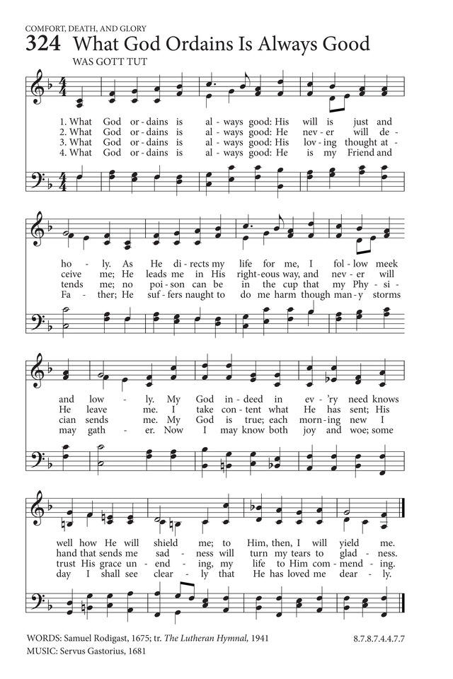

|
|
【凡事神預定真美好】 |
|
Whate'er my God ordains is right, |
凡事神預定真美好，神旨正義又聖潔， |
|
https://hymnary.org/hymn/HTLG2017/324  |
|
|
|
|

https://youtu.be/Y78zN7WDzIc -
What God Ordains Is Always Right
https://youtu.be/z-yJ3xMVUDI
Words: Samuel Rodigast (1676). Translated by Catherine Winkworth
(1829-1878). Music: Keith Getty and Matt Merker
| Text: | What God Ordains Is Always Right |
| Author: | Samuel Rodigast |
| Translator: | Gracia Grindal |
| Tune: | WAS GOTT TUT |
| Attributed to: | Severus Gastorius |
| Short Name: | Gracia Grindal |
| Full Name: | Grindal, Gracia, 1943- |
| Birth Year: | 1943 |
Gracia Grindal (b. Powers Lake, ND, 1943).
Grindal was educated at Augsburg College, Minneapolis, Minnesota; the University of Arkansas; and Luther-Northwestern Seminary, St. Paul, Minnesota, where she has served since 1984 as a professor of pastoral theology and communications. From 1968 to 1984 she was a professor of English and poet-in-residence at Luther College, Decorah, Iowa. Included in her publications are Sketches Against the Dark (1981), Scandinavian Folksongs (1983), Lessons in Hymnwriting (1986, 1991), We Are One in Christ: Hymns, Paraphrases, and Translations (1996), Good News of Great Joy: Advent Devotions for the Home (1994 with Karen E. Hong), Lisa sandell, the Story of Her Hymns (2001 with John Jansen), and A Revelry of Harvest: New and Selected Poems (2002). She was instrumental in producing the Lutheran Book of Worship (1978) and The United Methodist Hymnal (1989).
Bert Polman
Notes
Scripture References:
all st. = Rom. 8:38-39
st. 1 = Deut. 32:4
st. 2 = Deut. 31:6, Heb. 13:5, John 8:12; 14:18
st. 3 = Eph. 2:20
st. 4 = Luke 1:79
Samuel Rodigast (b. Graben, Thuringia, Germany, 1649; d. Berlin, Germany, 1708) wrote the text (“Was Gott tut, das ist wohlgetan!”) in six stanzas for his seriously ill friend, Severus Gastorius. The text was published in the Appendix to Das Hannoverische Gesangbuch (1676). Gracia Grindal (PHH 351) translated four of the original stanzas for the 1978 Lutheran Book of Worship.
A sermon on Deuteronomy 32:4 in hymn form, the text is a confession of unshakable trust in God's providence in our lives (see 440 and 446 as well as confessions found in Rom. 8:38-39 and Lord's Day 1 for a similar theme). The text expresses the kind of devout faith that produced Lutheran Pietism (which began around 1670) and provides a worthy vehicle for congregations to affirm trust in God's care.
Rodigast studied at the University of Jena and briefly served as an instructor in philosophy there. But for most of his professional life he was associated with the Greyfriars Gymnasium (high school) in Berlin, as joint rector from 1680 to 1698 and as rector from 1698 until his death. A fine scholar and administrator, Rodigast was offered a position at the University of Jena, but he preferred to stay at the gymnasium. Be is known to have written only two hymn texts, of which "What God Ordains" has become a classic.
Liturgical Use:
As a sung confession of faith in God's care and keeping and in his
wisdom as he directs our lives; a healing service; many other occasions
of worship.
--Psalter Hymnal Handbook
Read LessTune Information
| Title: | WAS GOTT TUT |
| Composer: | Severus Gastorius (1681) |
| Meter: | 8.7.8.7.4.4.8.8 |
| Incipit: | 51234 54365 43321 |
| Notes: | Composer Sererus Gastoirus or Johann Pachelbel |
| Key: | D Major |
| Copyright: | Public Domain |
| Short Name: | Severus Gastorius |
| Full Name: | Gastorius, Severus, 1646-1682 |
| Birth Year: | 1646 |
| Death Year: | 1682 |
Severus Gastorius (1647-1682 ) was a cantor in Jena, central Germany.
The son of a Weimar school teacher, Severus was born with the family name Bauchspiess (later Latinised to Gastorius) in Oettern, near Weimar. In 1667, he started studying at the University of Jena. From 1670, he deputized for cantor Andreas Zöll in Jena and married his daughter the following year. Gastorius assumed Zöll's position after his death in 1677. One of his friends, Samuel Rodigast, wrote the hymn "Was Gott tut, das ist wohlgetan" for Gastorius when he was sick (to cheer him up as Rodigast writes in his dedication). Even before he recovered, Gastorius set it to music based on a melody by Werner Fabricius. The tune became widely known in Germany as the cantor students of Jena cantor sang it every week at Gastorius' door as well as when they returned home. Gastorius was buried on 8 May 1682 in Jena's Johanniskirche cemetery. Gastorius had requested that the hymn "Was Gott tut, das ist wohlgetan" be sung at his funeral.
Gastorius is also credited with composing music for the funeral motet Du aber gehe hin bis das Ende komme. It was sung at the funeral of the Jena professor of medicine Johann Arnold Friderici on 2 June 1672.
--en.wikipedia.org/wiki/
Notes
WAS GOTT TUT is usually attributed to Severus Gastorius (b. Ottern, near Weimar, Germany, 1646; d. Jena, Germany, 1682), who presumably composed the tune during a convalescence in 1675 (see above). The tune was published in Ausserlesenes Weimarisches Gesangbuch (1681). Educated at the University of Jena, Gastorius became cantor of Jena in 1677, a post he held until his death. He wrote a variety of church music, including five funeral motets, but he is known primarily for composing WAS GOTT TUT.
The tune is a classic example of a seventeenth-century German chorale setting in bar form (AAB). Sing in sturdy unison, changing to harmony for some of the stanzas. Do not rush, but sing with stately fervor. Observing fermatas at the ends of the first two 1 long lines will help to bring a sense of patience to this melody by giving more breathing time.
--Psalter Hymnal Handbook
Was Gott tut, das ist wohlgetan (What God Ordains Is Always Good) Wikipedia

"Was Gott tut, das ist wohlgetan" (What God Ordains Is Always Good) is a Lutheran hymn written by the pietist German poet and schoolmaster Samuel Rodigast in 1675. The melody has been attributed to the cantor Severus Gastorius. An earlier hymn with the same title was written in the first half of the seventeenth century by the theologian Michael Altenburg.
History[edit]

As described in Geck (2006), an apocryphal account in the 1687 Nordhausen Gesangbuch (Nordhausen songbook) records that the hymn text was written by Samuel Rodigast in 1675 while his friend, the cantor Severus Gastorius, whom he knew from school and university, was "seriously ill" and confined to his bed in Jena. The account credits Gastorius, believing himself to be on his death bed, with composing the hymn melody as music for his funeral. When Gastorius recovered, he instructed his choir in Jena to sing the hymn each week "at his front door ... to make it better known."[1][2]
Rodigast studied first at the Gymnasium in Weimar and then at the University of Jena, where from 1676 he held an adjunct position in philosophy. In 1680 Rodigast was appointed vice-rector of the Gymnasium zum Grauen Kloster in Berlin, eventually becoming rector in 1698. In the interim he had refused offers of a professorship at Jena and school rectorships elsewhere.[3]
He was closely associated with the founder and leader of the pietist movement, Philipp Jakob Spener, who moved to Berlin in 1691 and remained there until his death in 1705.[3][4][5]
In his 1721 book on the lives of famous lyric poets, Johann Caspar Wetzel reports that already by 1708 Rodigast's hymn had acquired the reputation as a "hymnus suavissimus & per universam fere Evangelicorum ecclesiam notissimus," i.e. as one of the most beautiful and widely known church hymns.[6][7] The text of the hymn was first published without melody in Göttingen in 1676 in an appendix to the Hannoverische Gesangbuch (Hanover songbook). It was published with the melody in 1690 in the Nürnbergische Gesangbuch (Nuremberg songbook).[8]
Rodigast's involvement with pietism is reflected in the hymn "Was Gott tut, das ist wohgetan", which is considered to be one of the earliest examples of a pietist hymn. The Encyclopedia Britannica describes it as "one of the most exquisite strains of pious resignation ever written."[6][9] The opening phrase, "Was Gott tut, das ist wohlgetan", is a variant of "Alles, was er tut, das ist recht," Luther's German version of "all His ways are just" from Deuteronomy 32:4.[10] The theme of the hymn is pious trust in God's will in times of adversity and tribulation: as Unger writes, "True piety is to renounce self and submit in quiet faith to God's providential acts despite suffering and poverty."[11] In the 1690 Nürnbergische Gesangbuch the hymn is listed under Klag- und Creuz- Lieder (hymns of mourning and the Cross).
Despite the "sick-bed" narrative surrounding the composition of the hymn melody, there has been uncertainty as to whether Gastorius was involved in composing the original melody. On the other hand, it is known that the melody of the first half is the same as that of the hymn "Frisch auf, mein Geist, sei wohlgemuth" by Werner Fabricius (1633–1679), published by Ernst Christoph Homburg in Naumburg in 1659 in the collection Geistliche Lieder.[8][12]
Although the text of Rodigast's hymn was published without the melody in 1676 (in the Hannoverische Gesangbuch), it was discovered in the 1960s that already within three years the melody had been used in Jena for other hymn texts by Daniel Klesch. Educated at the University of Wittenberg, Klesch was a Hungarian pietist minister who, after the Protestant expulsions in Hungary, served during 1676–1682 as rector at the Raths-Schule in Jena where Gastorius acted as cantor. Klesch used the melody for two different hymn texts—"Brich an, verlangtes Morgenlicht" and "Der Tag, der ist so freudenreich"—in the Andächtige Elends-Stimme published by his brother Christoph Klesch in 1679. The Klesch hymnbook names four of the 44 hymn melodies it contains as being known and two as being composed by a king and a count; it describes the remaining 38—without further precision—as being written by Severus Gastorius and Johann Hancken, cantor in Strehlen in Silesia.[14][15][16][17]
The text and melody of Rodigast's hymn were published together for the first time in 1690 in the Nürnbergische Gesangbuch, with the composer marked as "anonymous". Before that the melody with the hymn title had already been used by Pachelbel for an organ partita in 1683. Taking into account the appearance of the melody in the Klesch hymnbook and the history of the hymn given in the 1687 Nordhausen Gesangbuch, the Swiss theologian and musicologist Andreas Marti has suggested that it is plausible that, as he lay on his sick-bed in Jena, the cantor Severus Gastorius had the melody of Fabricius spinning around in his head as an "earworm" and was inspired to add a second half.[8][18]
In German-speaking countries, the hymn appears in the Protestant hymnal Evangelisches Gesangbuch as EG 372[19] and in the Catholic hymnal Gotteslob as GL 416.[20]
Precursor to hymn[edit]

There was a precursor of Rodigast's hymn with the same title to a text by the theologian Michael Altenburg,[7] first published in 1635 by the Nordhausen printer Johannes Erasmus Hynitzsch, with first verse as follows:
Like its sequel, each of the seven verses starts with the same incipit. The hymn was published in the 1648 Cantionale Sacrum, Gotha, to a melody of Caspar Cramer, first published in Erfurt in 1641. It is No. 2524 in the German hymn catalogue of Johannes Zahn.[21][22][23]
In 1650 Samuel Scheidt composed a four part chorale prelude SSWV 536 on Altenburg's hymn in his Görlitzer Tabulaturbuch.[24]
Text[edit]
In the original German, the hymn has six stanzas, all beginning with the incipit "Was Gott tut, das ist wohlgetan". Below are the first, fifth and last stanzas with the 1865 translation by Catherine Winkworth.[8]

Was Gott tut, das ist wohlgetan!
Es bleibt gerecht sein Wille;
Wie er fängt meine Sachen an,
Will ich ihm halten stille.
Er ist mein Gott, der in der Not
Mich wohl weiß zu erhalten,
Drum laß' ich ihn nur walten.
Was Gott tut, das ist wohlgetan!
Muß ich den Kelch gleich schmecken,
Der bitter ist nach meinem Wahn,
Laß' ich mich doch nicht schrecken,
Weil doch zuletzt ich werd' ergötzt
Mit süßem Trost im Herzen,
Da weichen alle Schmerzen.
Was Gott tut, das ist wohlgetan!
Dabei will ich verbleiben;
Es mag mich auf die rauhe Bahn
Not, Tod und Elend treiben,
So wird Gott mich ganz väterlich
In seinen Armen halten,
Drum laß' ich ihn nur walten.
Whate'er my God ordains is right,
Holy His will abideth;
I will be still whate'er He doth,
And follow where He guideth.
He is my God, though dark my road,
He holds me that I shall not fall:
Wherefore to Him I leave it all.
Whate'er my God ordains is right
Though now this cup, in drinking,
May bitter seem to my faint heart,
I take it, all unshrinking.
My God is true; each morn anew
Sweet comfort yet shall fill my heart,
And pain and sorrow shall depart.
Whate'er my God ordains is right:
Here shall my stand be taken;
Though sorrow, need, or death be mine,
Yet I am not forsaken.
My Father's care is round me there;
He holds me that I shall not fall:
And so to Him I leave it all.
Melody[edit]
First stanza and melody in 2/2 time as they appear in the 1690 Nürnbergische Gesangbuch.[25][12][26][8][27]
![{
\clef treble \key c \major \tempo 4=80 \set Staff.midiInstrument = "english horn" {
\set Score.tempoHideNote = ##t
\override Score.BarNumber #'transparent = ##t
\time 2/2
\transpose c c'
\unfoldRepeats{ \repeat volta 2 { \partial 4 d g4 a b c' d'4. c'8 b4 e' d' c' b8 (a) b4 a2 g4}
d'4 e' e' a a d' d' g b a g fis8 (e) fis4 e2 d4 d' c' b a b a2 g4 \bar "|."}
}
}
\addlyrics
{ \small
Was Gott tut, das ist wohl -- ge -- tan; es bleibt ge -- recht sein Wil -- le;
wie er fängt mei -- ne Sa -- chen an,
Will ich ihm hal -- ten stil -- le.
Er ist mein Gott, der in der Not mich wohl weiß zu er -- hal -- ten;
drum laß ich ihn nur wal -- ten.
}](../image_author/l2sv0fjc.png)
Musical settings[edit]
Rodigast's hymn and its melody have been set by many composers, one of the earliest being Pachelbel, who set it first, together with other hymn, in an organ partita Musicalische Sterbens-Gedancken (Musical thoughts on dying), published in Erfurt in 1683. The organ partita, originating "in the devastating experience of the death of Pachelbel's family members during the plague in Erfurt", reflects the use of "Was Gott tut, das ist wohlgetan" as a funeral hymn. He set the hymn later as a cantata, most likely in Nürnberg after 1695.[18][28]
Johann Sebastian Bach set the hymn several times in his cantatas: cantatas BWV 98, BWV 99 and BWV 100 take the name of the hymn, the last setting all six stanzas; while cantatas BWV 12, BWV 69 and BWV 144 include a chorale to the words of the first or last stanza;[26][29] and he set the first stanza as the first in the set of three wedding chorales BWV 250–252, for SATB, oboes, horns, strings and organ, intended for use in a wedding service instead of a longer cantata.[30] For his inaugural cantata in Leipzig in 1723, Die Elenden sollen essen, BWV 75, Bach chose chorales on the fifth and last verses to end the two parts. Referring to contemporary disputes between orthodox Lutherans and Pietists, Geck (2006) has suggested that Bach's choice of a popular "spiritual" pietist hymn instead of a "traditional" Lutheran chorale might have been considered controversial. Indeed, before being appointed as Thomaskantor, Bach had been required by the Consistory in Leipzig to certify that he subscribed to the Formula of Accord, and thus adhered to the orthodox doctrines of Luther. Wolff (2001), however, comments that, from what is known, "Bach never let himself be drawn into the aggressive conflict between Kirchen- and Seelen-Music—traditional church music on the one hand and music for the soul on the other—which had a stifling effect on both sacred and secular musical life elsewhere in Germany."[6][31][32]
Bach also set the hymn early in his career for organ as the chorale prelude BWV 1116 in the Neumeister Collection. The hymn title appears twice on empty pages in the autograph manuscript of Orgelbüchlein, where Bach listed the planned chorale preludes for the collection: the 111th entry on page 127 was to be the hymn of Altenburg; and the 112th entry on the next page was for Rodigast's hymn.[33][26]
Amongst Bach's contemporaries, there are settings by Johann Gottfried Walther as a chorale prelude and Georg Philipp Telemann as a cantata (TWV 1:1747). Bach's immediate predecessor as Thomaskantor in Leipzig, Johann Kuhnau, also composed a cantata based on the hymn. In addition Christoph Graupner composed four cantatas on the text between 1713 and 1743; and Gottfried Heinrich Stölzel set the text in his cantata Was Gott tut das ist wohlgetan, H. 389. Amongst Bach's pupils, Johann Peter Kellner, Johann Ludwig Krebs and Johann Philipp Kirnberger composed chorale preludes on the melody.[27][34]

{kind=link}
{kind=link}
{kind=link}
In the nineteenth century, Franz Liszt used the hymn in several compositions. In 1862, following the death of his daughter Blandine, he wrote his Variations on a theme of J. S. Bach, S180 for piano based on Weinen, Klagen, Sorgen, Zagen, BWV 12, with its closing chorale on "Was Gott tut, das ist wohlgetan" on the penultimate page above which Liszt wrote the words of the chorale. Walker (1997) describes the Variations as "a wonderful vehicle for his grief" and the Lutheran chorale as "an unmistakable reference to the personal loss that he himself had suffered, and his acceptance of it."[35] The hymn also appeared as the sixth piece (for chorus and organ) in Liszt's Deutsche Kirchenlieder, S.669a (1878–1879) and the first piece in his Zwölf alte deutsche geistliche Weisen, S.50 (1878–1879) for piano. It was also set in the first of the chorale preludes, Op.93 by the French organist and composer Alexandre Guilmant.[27][35]
In 1902 Max Reger set the hymn as No. 44 in his collection of 52 Chorale Preludes, Op. 67. He also set it in 1914 as No. 16 of his 30 little chorale preludes for organ, Op. 135a.[36] In 1915 Reger moved to Jena, one year before his untimely death. In Jena he played the organ in the Stadtkirche St. Michael and composed his Seven Pieces for Organ, Op. 145. The first piece, Trauerode, is dedicated to the memory of those who fell in the war during 1914–1915: initially darkly coloured, the mood gradually changes to one of peaceful resignation at the close, when the chorale Was Gott tut is heard. The second piece is entitled Dankpsalm and is dedicated "to the German people". It begins with brilliant toccata-like writing which alternates with darker more contemplative music. The piece contains settings of two Lutheran chorales: first, another version of "Was Gott tut"; and then, at the conclusion, "Lobe den Herren". According to Anderson (2013), "the acceptance of divine will in the first is answered by praise of the omnipotent God in the second, a commentary on the sacrifice of war in a Job-like perspective."[37][38][39]
Sigfrid Karg-Elert included a setting in his 66 Chorale improvisations for organ, published in 1909.[40]
https://en.wikipedia.org/wiki/Was_Gott_tut,_das_ist_wohlgetan
Samuel Rodigast, "Whate'er My God Ordains Is Right"
Chuck Bumgardner | February 21st, 2011 | 0 Comments
FacebookTwitterEmailPrint分享
Samuel Rodigast, “Whate’er My God Ordains Is Right”

This outstanding hymn was introduced to our church back in 2009, and after
singing it for a month of Sundays in order to learn it, we hadn’t sung it since
because it is not in our hymnal. Definitely a situation which needed rectifying,
so I re-introduced it a couple of Sundays ago. To help in preparation, I sent
out an email to our congregation which included a a pdf of the hymn, a link to
biographical info on Samuel Rodigast, and a video of an organist playing the
hymn. I also included the text of the hymn with a few comments. I here reproduce
the email:
**********
This Sunday, I’m “reintroducing” a hymn that we learned back in August 2009.
From what I can tell, we haven’t sung it since, and that is to our detriment:
the message of the song is both theologically rich and pastorally powerful. It
is a strong text, and I wanted to set it before you before we sing it on Sunday.
We will not sing all the verses of the hymn on Sunday, but here they are for
your consideration. I know that it can be easy to skim over “quoted material” in
emails, but I encourage you to thoughtfully read these heart-strengthening
words:
Whate’er my God ordains is right,
His holy will abideth;
I will be still whate’er He doth,
And follow where He guideth.
He is my God,
Though dark my road,
He holds me that I shall not fall,
Wherefore to Him I leave it all.
Whate’er my God ordains is right,
He never will deceive me;
He leads me by the proper path,
I know He will not leave me,
And take content
What He hath sent;
His hand can turn my griefs away,
And patiently I wait His day.
Whate’er my God ordains is right,
His loving thought attends me;
No poison’d draught the cup can be
That my Physician sends me,
But medicine due
For God is true,
And on that changeless truth I build,
And all my heart with hope is fill’d.
Whate’er my God ordains is right,
Though now this cup in drinking
May bitter seem to my faint heart,
I take it all unshrinking;
Tears pass away
With dawn of day,
Sweet comfort yet shall fill my heart,
And pain and sorrow shall depart.
Whate’er my God ordains is right,
Here shall my stand be taken;
Though sorrow, need, or death be mine,
Yet am I not forsaken,
My Father’s care
Is round me there,
He holds me that I shall not fall,
And so to Him I leave it all.
The text was written by a German teacher, Samuel Rodigast, in order to encourage
a very sick friend. No doubt it did, and has continued to encourage God’s people
ever since.
All of us face trying circumstances, and this song reminds us that these things
are from the hand of God. This biblical truth is perhaps seen most poignantly in
Job 1, where Job attributes his recent tragedies to the hand of God (“the Lord
gave, and the Lord has taken away”), and Scripture affirms his statement by
noting that “In all this Job did not sin or charge God with wrong” (Job
1:21-22Open in Logos Bible Software (if available)).
But Rodigast does more than baldly acknowledge that all things come from God’s
hand. That much could be done by a bitter and angry man hurling invective
heavenward after a loved one dies or he loses something precious to him. This
text, however, points out again and again that God’s sovereign hand brings about
what is right: “Whate’er my God ordains is right.” And in the midst of the
difficult things that God himself brings into our lives, God himself is helping
us (e.g., “He holds me that I shall not fall”), and we can look forward to the
day when all suffering will be over (e.g., “Patiently I wait his day”).
https://religiousaffections.org/articles/hymnody/samuel-rodigast-whateer-god/